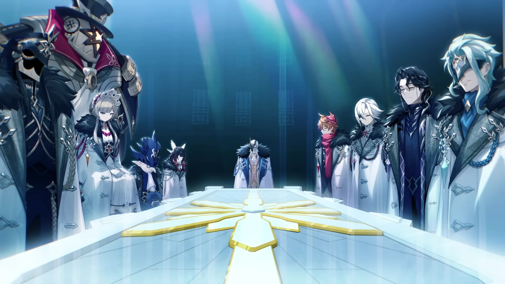

Os Fatui (singular Fatuus)
são uma delegação de diplomatas do Palácio Zapolyarny de Snezhnaya.
Há também um destacamento militar liderado pelos Onze Mensageiros dos Fatui e pela própria Tsaritsa.
São uma das principais facções antagônicas em Genshin Impact.
Eles também são os principais antagonistas no Mangá.
